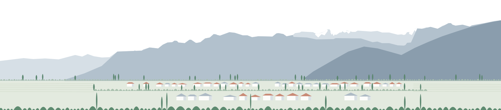

Portal PLADECO Rengo 2025-2035 · v45.359
Paleta, iconos, tipografía, leyendas y composiciones del paquete piloto, con la procedencia de cada recurso.
Los colores son una propuesta de diseño, no la identidad oficial de la Municipalidad de Rengo. Los contrastes de esta lámina se calculan en el navegador al abrirla, con la fórmula WCAG.
Tres recursos que se complementan. Cada pieza cumple al menos una función: identificar Rengo, localizar información, explicar un dato, documentar el proceso o relacionar decisiones.
Lugares y actividades reales, con lugar, fecha y procedencia en el pie. Nunca como fondo de un texto largo. Si la foto no tiene esos datos, se dice en el pie.
Contorno comunal referencial, posición del territorio, norte y escala. Sin capas de más y sin límites aproximados presentados como oficiales.
Iconos de eje, panorámica territorial y diagramas: identifican temas y relaciones. Los gráficos con valores se dibujan desde datos, no desde imágenes.
Base neutra para leer, identidad tomada del escudo comunal, un acento por eje y un acento por parte del plan. Los colores de estado son una escala aparte y nunca coinciden con los de eje.
Base de lectura
Identidad (colores del archivo SVG del escudo)
Acento por eje: relleno de acento en iconos y filetes. No se usa como color de texto.
Acento por parte del plan: número de capítulo y filete de la apertura
Panorámica: claro de fondo a oscuro en primer plano
Amplían la familia de línea del portal con su misma retícula de 24, trazo de 1,7 y remates redondeados. Una idea por símbolo, siempre junto al nombre del eje. En la variante con acento, el contorno conserva el color del texto y el color del eje rellena solo una forma.
| Eje | 24 px | 32 px | 48 px | 48 px con acento | Idea del símbolo |
|---|
Una sola familia, Poppins (licencia SIL Open Font), en cuatro pesos. Los tamaños son los tokens del portal.
Iguales en todas las láminas y diagramas, para que se puedan comparar. Siempre con texto: el color o el trazo nunca son la única vía para leer un dato.
Naturaleza del dato
ObservadoProyectado o estimadoRango de escenariosSin medición
Las barras parten siempre en cero. Si una línea no parte en cero, el gráfico lo dice.
Cantidades en mapas: escala secuencial de un tono
Más oscuro significa más cantidad. Se distingue por luminosidad y no depende de percibir el color.
Relaciones en diagramas
Vínculo explícito en los datosPendiente de validación
Problema en terracota, evidencia en gris y respuesta del plan en verde. La etapa además va escrita.
Pies de piezas
Qué es (ilustración, fotografía, recorte o esquema) · lugar y fecha · procedencia y autoría, o «no consta» · fuente de los datos · advertencias (exageración vertical, límite referencial, diferencias registradas).
Capturas del portal a 1440 px. Cada composición usa la retícula de 12 columnas, un filete superior en lugar de una caja y una sola pieza protagonista.
